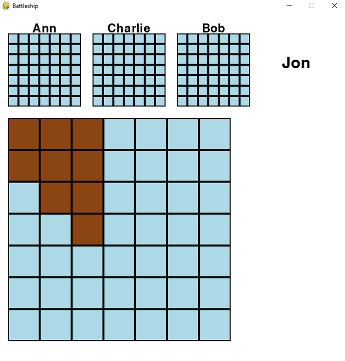

A multiplayer version of the popular board game using TCP networking, implented using the Python module Pygame
The main point of creating this project was to create a multiplayer application using networking. At the time, I was also learning a little about Pygame and took the opportunity to use what I learned with both. I ran the server from my computer and receievd connections from 4 different clients. The server keeps count of the clients and once the number of connections was 4, would send a signal to all users to begin the game. The order of the game was randomized and the server would wait for the action from the player whose turn it was.
On the client side, once they connected to the server, they are first prompted to type out the name that will be displayed to other users. After that they created their board layout. Compared to the original game, this version was on a smaller grid and only had 3 boats per player. This was to prevent making the game last too long. Once all players created their boards, the game would start and the player would see their own board and 3 blank boards to represent the other users. The player whose turn it was, is displayed in the window and the game only reacts once that player makes a move. The server then checks the grid location of the picked board and returns to all the users whether the move was a hit or not. Once a player lost all of their ships, they were no longer in the rotation for playing and could only spectate. Once a winner was found, the server sent the winning player's name to the users and the game closed shortly after.